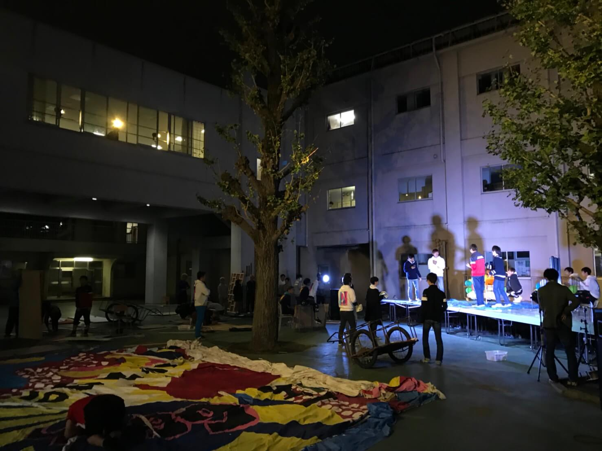
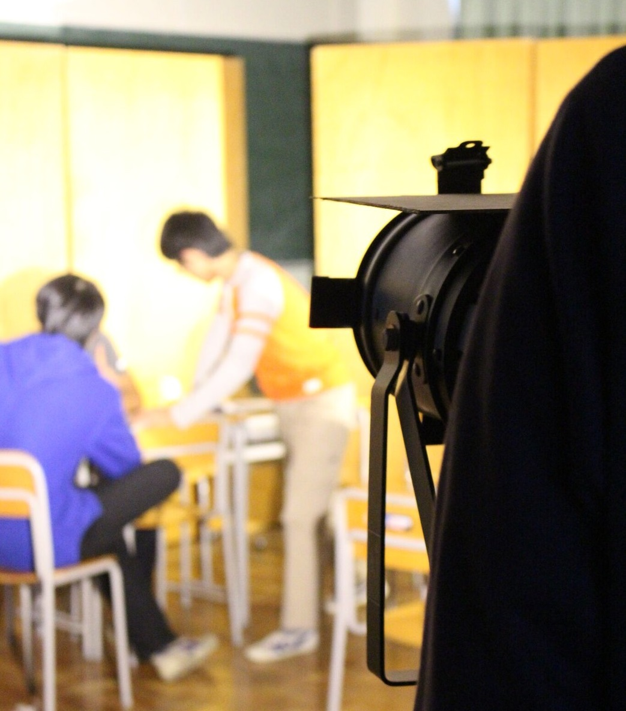
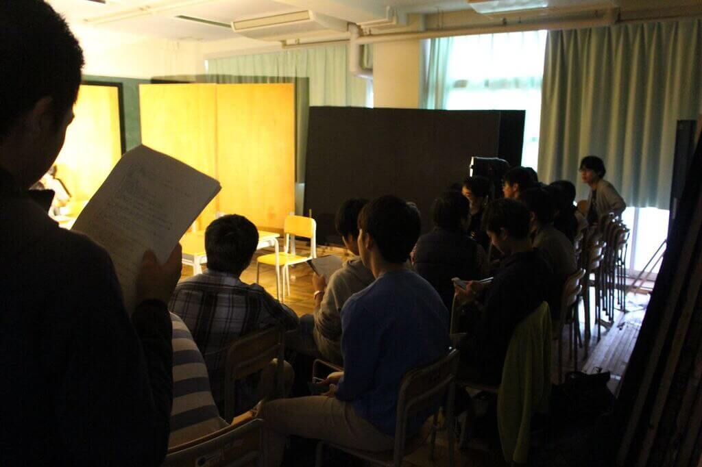

特別残留期間が始まりました！
今日は10/24、文化祭10日前です。
筑駒は文化祭一色になり、忙しそうに廊下を走っている生徒の姿が多数見受けられます。廊下は走っちゃダメ！という定番のツッコミを封印して、見逃してほしいなぁと思う日々です。
さて、文化祭10日前といえば、「特別残留期間」の開始です。
特別残留期間とは文化祭準備のために、平時では18:00が下校完了時刻であるところを、中学生は18:30、高校生は19:30まで残って作業をできるようになるシステムです。
文化祭はいよいよ大詰め、今日は文化祭作業の風景をお届けしたいと思います。
校門入ってまっすぐ抜けたところ、ステージ上では、文化祭3日目に行われるミスター筑駒の練習と、2日目16:30から行われる中夜祭の練習が行われています。
夜暗くなった台上をスポットライトで照らし、マイクやスピーカーを使って本番さながらの練習が繰り広げられます。以下、中夜祭の練習風景をご覧ください。


一方室内では、演劇団体も仕上げに入ってきています。
各団体、文化祭本番と同様のセットでスポットライトを使用して演劇練習を行います。
照明練習は電力事情の関係で限られた数しかできないため、各団体が指定された時間に集中して練習を行います。照明練習では、普段確認できない照明の当たり方、色、空気を確認しながら演劇を行います。そのためどの団体も緊張感でピリピリとしています。空気感が伝わる写真を同封いたします。


次の記事：特別残留期間が始まりました！